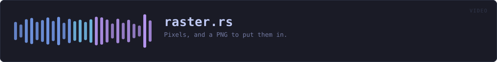

crates/veilvoice-video/src/raster.rs
veilvoice-video · 594 lines · read the source here · or on GitHub
Pixels, and a PNG to put them in.
Why the video's pictures are drawn here rather than converted
Everything else this crate draws is SVG, which is right for a page: the reader's browser has a renderer and a font library and neither is this project's problem. A video file is not a page. ffmpeg reads a directory of raster images, and no build of ffmpeg can be assumed to read SVG: that needs librsvg, which most builds do not have, and a picture that fails to encode on somebody's machine is worse than one that was never offered.
The other way is to convert the SVG here, which means an SVG rasteriser. Every usable one is large, and crate::ffmpeg already spends a page explaining why this project will not pull in a large library to make a video file. Doing it anyway, one module over, would make that argument a thing this project says rather than a thing it does.
So the picture is a few hundred lines: rectangles, circles, a face (crate::font) and a PNG writer. That is the whole of what the drawing needs, and it is small enough to read.
The same picture on every machine
No system fonts, no floating-point that varies by platform in a way that reaches a pixel, and no dependency that could quietly change its output. Two people rendering the same recording get identical files, which is the same property the reproducible builds have and is checked the same way: by comparing bytes.
One dependency, and what it is for
miniz_oxide deflates the pixel data, because PNG is deflate and a PNG written with stored blocks is roughly six megabytes a frame. It is pure Rust and it is already in this tree, underneath flate2, which lofty and pgp both pull in, so naming it here adds nothing to the dependency graph that was not being compiled already.
In plain words
The part that draws the video's pictures, dot by dot, and writes them as PNG files.
It is written here rather than borrowed because the video tool this hands its pictures to cannot be relied on to read drawings, and converting them would mean carrying a large piece of somebody else's code, which is the thing this program is careful not to do.
WHAT THIS FILE CONTAINS
594 lines defining 17 functions (12 public), 2 types and 0 constants. Everything below is read out of the source, so it cannot disagree with the code.
The types it owns.
struct Canvasline 74 · A picture being drawn, one byte per channel, three channels per pixel.struct Crcline 349 · The CRC-32 PNG puts on every chunk.
What happens when it runs. These are the ways in: public, and nothing else in this file calls them, so they are what an outside caller reaches first.
colourline 61 · Read #rrggbb into three bytes.Canvas::widthline 95 · How wide it is.Canvas::heightline 100 · How tall it is.Canvas::rounded_rectline 157 · A rectangle with rounded ends, which is how the level bars are drawn.
reachescircle,rect,blendCanvas::ringline 222 · A ring, drawn as a filled disc with the middle taken back out.
reachesat,blend,circleCanvas::text_centredline 283 · Draw text centred on centre_x, with its top at y.
reachestext,rectCanvas::pngline 306 · The picture as a PNG file.
reacheschunk,new
WHAT CALLS WHAT
The functions this file defines, and the calls between them. An edge means the callee's name appears, called, inside the caller's body. This is a syntactic reading, not a type-resolved one.
The same graph as Mermaid source
%%{init: {"theme":"base","themeVariables":{"background":"#1a1b26","primaryColor":"#1f2335","primaryTextColor":"#c0caf5","primaryBorderColor":"#7aa2f7","secondaryColor":"#16161e","tertiaryColor":"#16161e","lineColor":"#737aa2","textColor":"#c0caf5","mainBkg":"#1f2335","nodeBorder":"#7aa2f7","clusterBkg":"#16161e","clusterBorder":"#2f3549","fontFamily":"ui-monospace, SFMono-Regular, Consolas, monospace","fontSize":"14px"}}}%%
flowchart TD
n_colour(["colour<br/>line 61"])
n_new["Canvas::new<br/>line 82"]
n_width(["Canvas::width<br/>line 95"])
n_height(["Canvas::height<br/>line 100"])
n_at["Canvas::at<br/>line 105"]
n_blend["Canvas::blend<br/>line 118"]
n_rect["Canvas::rect<br/>line 137"]
n_rounded_rect(["Canvas::rounded_rect<br/>line 157"])
n_circle["Canvas::circle<br/>line 183"]
n_ring(["Canvas::ring<br/>line 222"])
n_text["Canvas::text<br/>line 255"]
n_text_centred(["Canvas::text_centred<br/>line 283"])
n_png(["Canvas::png<br/>line 306"])
n_chunk["chunk<br/>line 335"]
n_new["Crc::new<br/>line 352"]
n_eat["Crc::eat<br/>line 356"]
n_done["Crc::done<br/>line 370"]
n_chunk --> n_new
n_circle --> n_blend
n_png --> n_chunk
n_ring --> n_at
n_ring --> n_blend
n_ring --> n_circle
n_rounded_rect --> n_circle
n_rounded_rect --> n_rect
n_text --> n_rect
n_text_centred --> n_text
click n_colour href "https://github.com/tilas01/veilvoice/blob/main/crates/veilvoice-video/src/raster.rs#L61" "open the source"
click n_new href "https://github.com/tilas01/veilvoice/blob/main/crates/veilvoice-video/src/raster.rs#L82" "open the source"
click n_width href "https://github.com/tilas01/veilvoice/blob/main/crates/veilvoice-video/src/raster.rs#L95" "open the source"
click n_height href "https://github.com/tilas01/veilvoice/blob/main/crates/veilvoice-video/src/raster.rs#L100" "open the source"
click n_at href "https://github.com/tilas01/veilvoice/blob/main/crates/veilvoice-video/src/raster.rs#L105" "open the source"
click n_blend href "https://github.com/tilas01/veilvoice/blob/main/crates/veilvoice-video/src/raster.rs#L118" "open the source"
click n_rect href "https://github.com/tilas01/veilvoice/blob/main/crates/veilvoice-video/src/raster.rs#L137" "open the source"
click n_rounded_rect href "https://github.com/tilas01/veilvoice/blob/main/crates/veilvoice-video/src/raster.rs#L157" "open the source"
click n_circle href "https://github.com/tilas01/veilvoice/blob/main/crates/veilvoice-video/src/raster.rs#L183" "open the source"
click n_ring href "https://github.com/tilas01/veilvoice/blob/main/crates/veilvoice-video/src/raster.rs#L222" "open the source"
click n_text href "https://github.com/tilas01/veilvoice/blob/main/crates/veilvoice-video/src/raster.rs#L255" "open the source"
click n_text_centred href "https://github.com/tilas01/veilvoice/blob/main/crates/veilvoice-video/src/raster.rs#L283" "open the source"
click n_png href "https://github.com/tilas01/veilvoice/blob/main/crates/veilvoice-video/src/raster.rs#L306" "open the source"
click n_chunk href "https://github.com/tilas01/veilvoice/blob/main/crates/veilvoice-video/src/raster.rs#L335" "open the source"
click n_new href "https://github.com/tilas01/veilvoice/blob/main/crates/veilvoice-video/src/raster.rs#L352" "open the source"
click n_eat href "https://github.com/tilas01/veilvoice/blob/main/crates/veilvoice-video/src/raster.rs#L356" "open the source"
click n_done href "https://github.com/tilas01/veilvoice/blob/main/crates/veilvoice-video/src/raster.rs#L370" "open the source"
classDef entry fill:#1f2335,stroke:#7aa2f7,color:#c0caf5
class n_colour,n_width,n_height,n_rounded_rect,n_ring,n_text_centred,n_png entry
classDef api fill:#1f2335,stroke:#7dcfff,color:#c0caf5
class n_new,n_at,n_rect,n_circle,n_text api
classDef helper fill:#1f2335,stroke:#bb9af7,color:#c0caf5
class n_blend,n_chunk,n_new,n_eat,n_done helperThis site loads no third-party script, so it cannot run Mermaid; the diagram above is the same nodes and edges drawn by the generator instead. GitHub renders the source below directly.
ITEMS
| Item | Line | Documentation |
|---|---|---|
Rgb pub type | 52 | A colour, as the three bytes a PNG stores. |
colour pub fn | 61 | Read #rrggbb into three bytes. |
Canvas pub struct | 74 | A picture being drawn, one byte per channel, three channels per pixel. |
Canvas::new pub fn | 82 | A canvas of width by height, filled with background. |
Canvas::width pub fn | 95 | How wide it is. |
Canvas::height pub fn | 100 | How tall it is. |
Canvas::at pub fn | 105 | The colour at a point, or None outside the canvas. |
Canvas::blend fn | 118 | Mix colour into the pixel at x, y by alpha, from 0.0 to 1.0. |
Canvas::rect pub fn | 137 | A filled rectangle, clipped to the canvas. |
Canvas::rounded_rect pub fn | 157 | A rectangle with rounded ends, which is how the level bars are drawn. |
Canvas::circle pub fn | 183 | A filled circle with a smooth edge. |
Canvas::ring pub fn | 222 | A ring, drawn as a filled disc with the middle taken back out. |
Canvas::text pub fn | 255 | Draw text with its left edge at x and its top at y. |
Canvas::text_centred pub fn | 283 | Draw text centred on centre_x, with its top at y. |
Canvas::png pub fn | 306 | The picture as a PNG file. |
chunk fn | 335 | Append one PNG chunk: length, type, data, and the checksum over both. |
Crc struct | 349 | The CRC-32 PNG puts on every chunk. |
Crc::new fn | 352 | |
Crc::eat fn | 356 | |
Crc::done fn | 370 |